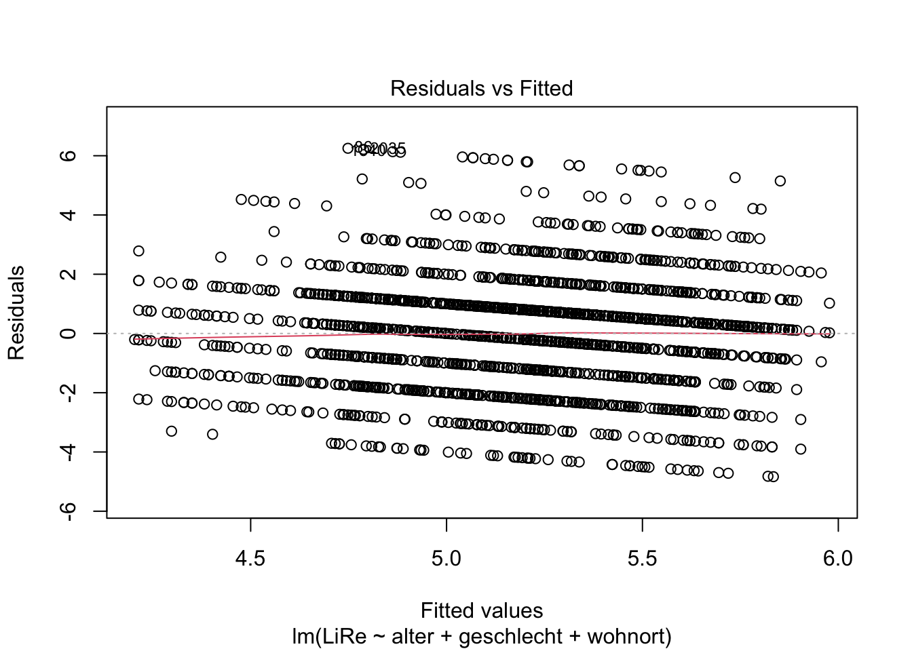
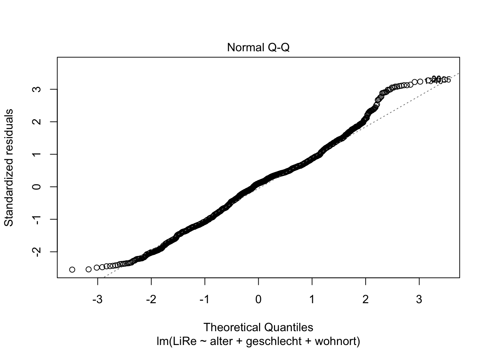
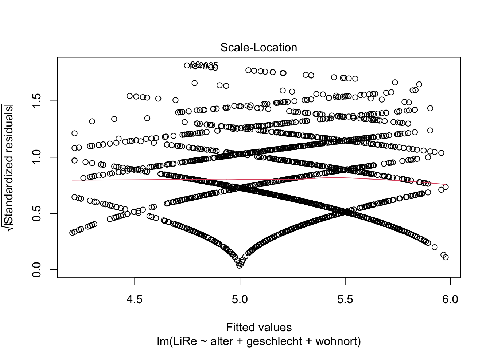
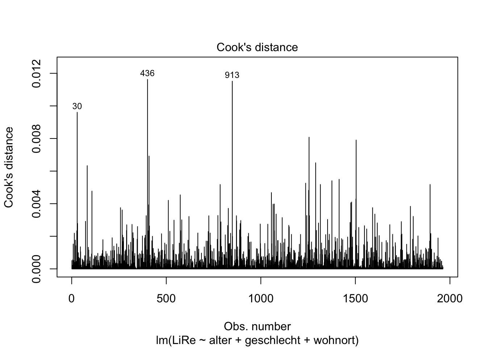
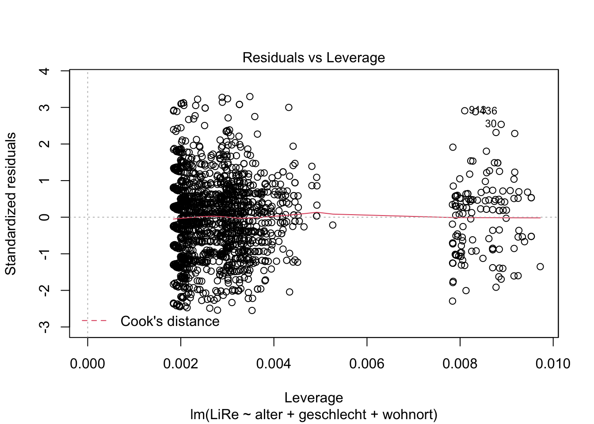
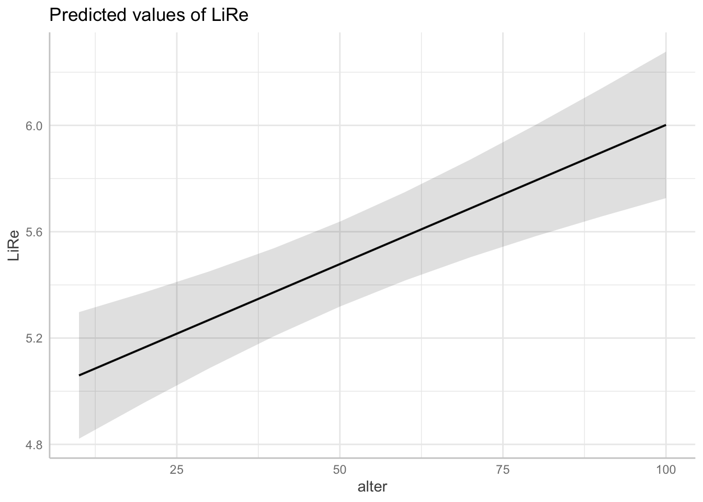
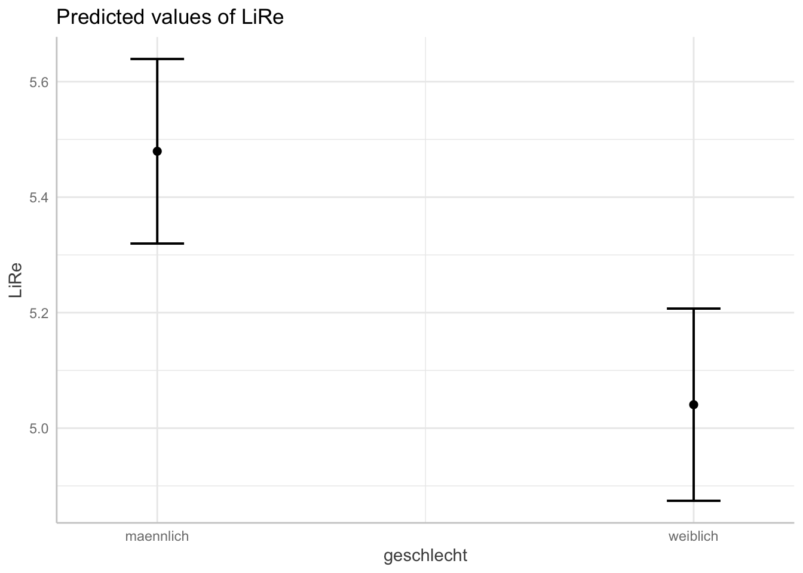
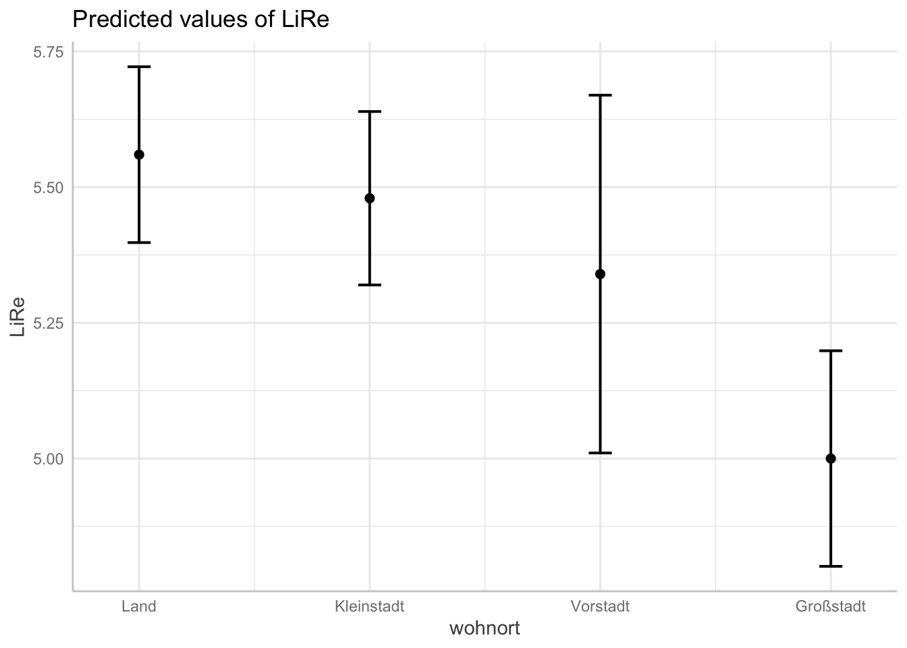

Nachdem wir in der vorletzten Sitzung die bivariate lineare Regression kennengelernt haben, wollen wir nun herausfinden, wie wir mehrere unabhängige Variablen gleichzeitig berücksichtigen können. Bei der multiplen linearen Regression wird eine abhängige Variable durch mehrere unabhängige Variablen erklärt. Damit verlassen wir die bivariate Statistik und stoßen in den Bereich der multivariaten Statistik vor. Mehr als eine einzige unabhängige Variable einzubeziehen ermöglicht es, die Erklärungsleistung des Regressionsmodells zu erhöhen. Wir können die (Varianz der) abhängigen Variable also mit zusätzlich berücksichtigten unabhängigen Variablen besser (zu einem höheren Anteil) erklären. In dieser Sitzung werden wir eine multiple lineare Regression durchführen, die Anwendungsvoraussetzungen von linearen Modellen prüfen und die Ergebnisse angemessen visualisieren.
Wie in den vergangenen Sitzungen, müssen wir zunächst die Datensätze laden und die verwendeten Variablen sinnvoll umkodieren.
getwd()
setwd("eigener Pfad")
library(foreign)
gles <- read.spss(file = "ZA6801_de_v4-0-1.sav", to.data.frame = TRUE)
lijphart <- read.csv2("Lijphart_Data_recode.csv")# GLES
# Alter
q2c_num <- as.numeric(as.character(gles$q2c))
gles$alter <- 2017 - q2c_num
# Geschlecht
names(gles)[names(gles) == "q1"] <- "geschlecht"
# Einkommen kategorial
gles$einkommen_cat[gles$q192 == "unter 500 Euro" |
gles$q192 == "500 bis unter 750 Euro" |
gles$q192 == "750 bis unter 1000 Euro"] <- "weniger als 1000"
gles$einkommen_cat[gles$q192 == "1000 bis unter 1250 Euro" |
gles$q192 == "1250 bis unter 1500 Euro" |
gles$q192 == "1500 bis unter 2000 Euro"] <- "1000 bis 1999"
gles$einkommen_cat[gles$q192 == "2000 bis unter 2500 Euro" |
gles$q192 == "2500 bis unter 3000 Euro"] <- "2000 bis 2999"
gles$einkommen_cat[gles$q192 == "3000 bis unter 4000 Euro"] <- "3000 bis 3999"
gles$einkommen_cat[gles$q192 == "4000 bis unter 5000 Euro"] <- "4000 bis 4999"
gles$einkommen_cat[gles$q192 == "5000 bis unter 7500 Euro"] <- "5000 bis 7499"
gles$einkommen_cat[gles$q192 == "7500 bis unter 10000 Euro" |
gles$q192 == "10000 Euro und mehr"] <- "7500 und mehr"
gles$einkommen_cat <- factor(gles$einkommen_cat,
levels = c("weniger als 1000",
"1000 bis 1999",
"2000 bis 2999",
"3000 bis 3999",
"4000 bis 4999",
"5000 bis 7499",
"7500 und mehr"))
# Einkommen numerisch
gles$einkommen_num[gles$einkommen_cat == "weniger als 1000"] <- 1
gles$einkommen_num[gles$einkommen_cat == "1000 bis 1999"] <- 2
gles$einkommen_num[gles$einkommen_cat == "2000 bis 2999"] <- 3
gles$einkommen_num[gles$einkommen_cat == "3000 bis 3999"] <- 4
gles$einkommen_num[gles$einkommen_cat == "4000 bis 4999"] <- 5
gles$einkommen_num[gles$einkommen_cat == "5000 bis 7499"] <- 6
gles$einkommen_num[gles$einkommen_cat == "7500 und mehr"] <- 7
# Wohnort
gles$wohnort[gles$q197 == "Grossstadt"] <- "Großstadt"
gles$wohnort[gles$q197 == "kleine oder mittelgrosse Stadt"] <- "Kleinstadt"
gles$wohnort[gles$q197 == "laendliche Gegend oder Dorf"] <- "Land"
gles$wohnort[gles$q197 == "Vorstadt/ Vorort einer Grossstadt"] <- "Vorstadt"
# Links-Rechts-Selbsteinstufung
gles$LiRe <- as.character(gles$q32)
gles$LiRe[gles$LiRe == "1 links"] <- "1"
gles$LiRe[gles$LiRe == "11 rechts"] <- "11"
gles$LiRe <- as.numeric(gles$LiRe)
# Links-Rechts-Selbsteinstufung aggregiert
gles$LiRe_cat[gles$LiRe >= 1 &
gles$LiRe <= 2] <- "links"
gles$LiRe_cat[gles$LiRe >= 3 &
gles$LiRe <= 4] <- "moderat links"
gles$LiRe_cat[gles$LiRe >= 5 &
gles$LiRe <= 7] <- "mittig"
gles$LiRe_cat[gles$LiRe >= 8 &
gles$LiRe <= 9] <- "moderat rechts"
gles$LiRe_cat[gles$LiRe >= 10 &
gles$LiRe <= 11] <- "rechts"
gles$LiRe_cat <- factor(gles$LiRe_cat,
levels = c("links",
"moderat links",
"mittig",
"moderat rechts",
"rechts"))
# AfD-Wahl
gles$AfD.Wahl[gles$q19ba == "AfD"] <- 1
gles$AfD.Wahl[gles$q19ba != "AfD"] <- 0
# Lijphart
# ENPP
lijphart$enpp4510 <- as.numeric(lijphart$enpp4510)
# Gallagher-Index
lijphart$disprop4510 <- as.numeric(lijphart$disprop4510)
# Bikameralismus-Index
lijphart$bicam4510 <- as.numeric(lijphart$bicam4510)
# Minimal-Gewinn-Koalition mit einer Partei
lijphart$minwin_one_part4510 <- as.numeric(lijphart$minwin_one_part4510)
# Exekutivdominanz (Kabinettsdauer)
lijphart$exe_dom4510 <- as.numeric(lijphart$exe_dom4510)Durch linearen Regressionen erklärt man die (Ausprägung der) abhängigen Variable \(y_i\) mithilfe des Schnittpunktes der Y-Achse \(b_0\) und der (Ausprägung der) unabhängigen Variablen \(x_{ji}\). Die Regressionskoeffizienten \(b_{1...j}\) geben den Effekt einer unabhängigen Variable auf die abhängige Variable an (um \(y_i\) zu berechnen, werden sie also mit \(x_{ji}\) multipliziert). Schließlich bezeichnet \(e_i\) die Residuen, also den Teil der Abweichung von \(y_i\), der nicht durch das Modell erklärt wird. \(e_i\) ist in der Gleichung notwendig, weil eine vollständige Erklärung von \(y_i\) durch die einbezogenen unabhängigen Variablen \(x_{ji}\) zumindest in den Sozialwissenschaften in der Regel nicht zu realisieren ist.
\(y_i=b_0+b_1x_{1i}+b_2x_{2i}+...+b_jx_{ji}+e_i\).
Die Residue \(e_i\) ist die Differenz (wörtlich: der Rest) der tatsächlichen Beobachtung \(y_i\) vom Vorhersagewert laut Regressionsgerade \(\hat{y}\). Die Vorhersagewerte berechnen sich also wie folgt:
\(\hat{y}_i=b_0+b_1x_{1i}+b_2x_{2i}+...+b_jx_{ji}\)
In unserem konkreten Modell erklären wir die Links-Rechts-Selbsteinstufung der Befragten anhand ihres Alters, Geschlechts und Wohnorts. Die Gleichung wäre also wie folgt:
\(LiRe_i=b_0+b_{1i}\cdot Alter_i+b_{2i}\cdot Geschlecht_i+b_{3i}\cdot Wohnort_i+e_i\)
Wie in der vorherigen Sitzung gezeigt, berechnen wir die lineare Regression in R mit lm(). Allerdings fügen wir diesmal jeweils mit einem + zusätzliche Variablen hinzu. Dadurch wird nicht mehr bloß der Effekt des Alters auf die Links-Rechts-Selbsteinstufung geschätzt, sondern der Effekt von Alter, Geschlecht und Wohnort parallel. Das geschieht allerdings jeweils unter statistischer Kontrolle der Effekte der anderen unabhängigen Variablen, sodass wir jeweils den Netto-Effekt einer unabhängigen Variablen auf die abhängige Variable berechnen, während die anderen Variablen konstant gehalten werden. Mit dem Argument data bestimmen wir den Datensatz gles.
Wenn wir die Funktion lm() ausführen, werden uns der Intercept, also der Wert der abhängigen Variable LiRe am Schnittpunkt von Regressionsgerade und Y-Achse, und die Regressionskoeffizienten der Variablen angezeigt. Bei der metrischen Variable alter zeigt dieser die Steigung der Regressionsgeraden, also die Veränderung in der abhängigen Variable LiRe, mit der Veränderung von alter um eine Einheit (also um ein Jahr). Bei der dichotomen Variable geschlecht wird die Veränderung in LiRe berichtet, die mit dem Wechsel der Kategorie “männlich” zur Kategorie “weiblich” einhergeht. Bei der kategorialen Variable wohnort wird die Veränderung in der abhängigen Variable LiRe berichtet, die jeweils im Vergleich zu der nicht gezeigten Referenzkategorie einhergeht. Von den vier Kategorien von wohnort wird die Kategorie Großstadt nicht gezeigt und ist die Referenzkategorie.
lm(LiRe ~ alter + geschlecht + wohnort, data = gles)##
## Call:
## lm(formula = LiRe ~ alter + geschlecht + wohnort, data = gles)
##
## Coefficients:
## (Intercept) alter geschlechtweiblich wohnortKleinstadt
## 4.47512 0.01047 -0.43886 0.47961
## wohnortLand wohnortVorstadt
## 0.55996 0.33990Die Regressionsgerade schneidet die Y-Achse bei etwa 4,48 “Punkten” auf der LiRe-Skala. Inhaltlich interessanter sind die Koeffizienten: Mit einem zusätzlichen Jahr ist eine Person durchschnittlich um etwa 0,01 Punkte “rechter”. Frauen sind im Mittel etwa 0,44 Punkte “linker” als Männer. Im Vergleich zur Großstadt sind Befragte, die in der Kleinstadt leben, im Mittel etwa 0,48 Punkte “rechter”. Befragte auf dem Land sind durchschnittlich etwa 0,56 und Befragte aus der Vorstadt etwa 0,34 Punkte “rechter” als Befragte aus der Großstadt.
Einen detaillierteren Regressionsoutput erhalten wir, wenn wir den Output von lm() in einem Objekt speichern, hier modell, und die Funktion summary() darauf anwenden.
modell <- lm(LiRe ~ alter + geschlecht + wohnort, data = gles)
summary(modell)##
## Call:
## lm(formula = LiRe ~ alter + geschlecht + wohnort, data = gles)
##
## Residuals:
## Min 1Q Median 3Q Max
## -4.8343 -1.3085 0.1901 1.1156 6.2517
##
## Coefficients:
## Estimate Std. Error t value Pr(>|t|)
## (Intercept) 4.475121 0.148485 30.139 < 2e-16 ***
## alter 0.010471 0.002272 4.608 4.33e-06 ***
## geschlechtweiblich -0.438857 0.085989 -5.104 3.65e-07 ***
## wohnortKleinstadt 0.479610 0.117138 4.094 4.40e-05 ***
## wohnortLand 0.559962 0.117634 4.760 2.08e-06 ***
## wohnortVorstadt 0.339904 0.187732 1.811 0.0704 .
## ---
## Signif. codes: 0 '***' 0.001 '**' 0.01 '*' 0.05 '.' 0.1 ' ' 1
##
## Residual standard error: 1.9 on 1957 degrees of freedom
## (149 observations deleted due to missingness)
## Multiple R-squared: 0.03567, Adjusted R-squared: 0.03321
## F-statistic: 14.48 on 5 and 1957 DF, p-value: 5.932e-14Die eben besprochenen Koeffizienten stehen in der ersten Spalte des so erzeugten Outputs. In der zweiten Spalte sind Standardfehler, in der dritten t-Werte und in der vierten p-Werte mit “Signifikanz-Sternchen” (siehe Legende darunter) abgetragen. Unten sehen wir Standardfehler des Modells und Freiheitsgrade sowie das Bestimmtheitsmaß \(R^2\) und das angepasste \(R^2\). Schließlich wird der F-Test auf Gesamtsignifikanz des Modells mitsamt p-Wert berichtet.
Das Modell mit seinen unabhängigen Variablen alter, geschlecht und wohnort kann die Varianz in der abhängigen Variable LiRe nur zu einem Anteil von etwas mehr als 3% erklären (\(R^2=0,36\); \(adj. R^2=0,033\)). In einer Studienarbeit müssten wir prüfen, ob die Erklärungsleistung des Modells mithilfe zusätzlicher unabhängiger Variablen erhöht werden kann. Der geringe p-Wert der F-Statistik zeigt, dass das Modell insgesamt die abhängige Variabe signifikant besser erklärt als ein Modell ohne unabhängige Variablen. Die von uns berücksichtigten Variablen sind (mit Ausnahme von Wohnort: Vorstadt) statistisch hoch signifikant, d.h. es ist sehr unwahrscheinlich, dass der festgestellte Koeffizient in Wahrheit Null ist (ein 99,9%-Konfidenzintervall um den Koeffizienten beinhaltet die Null nicht). Für Wohnort: Vorstadt beinhaltet zumindest ein 90%-Konfidenzintervall die Null nicht.
Lineare Regressionen unterstellen bestimmte Annahmen über die Daten, zu deren Analyse sie verwendet werden. Diese Annahmen prüfen wir anhand von Plots zur Regressionsdiagnostik. Dabei sind insbesondere die Linearität des unterstellten Zusammenhangs, die Normalverteilung der Residuen, Homoskedastizität (Varianzgleichheit der Residuen), Ausreißer mit großem Einfluss und Nichtvorliegen von Multikollinearität von Interesse. Die Plots erzeugen wir über plot().
plot(modell)
Die Linearität des Zusammenhangs prüfen wir anhand des Residuals vs. Fitted Values-Plots, der der erste der Diagnostik-Plots ist. Deshalb fügen wir eine Eins im Input der Funktion an.
plot(modell, 1)Wenn wir die Vorhersagewerte (“fitted values”) den Residuen gegenüberstellen, ist kein Muster zu erkennen (mit größeren Vorhersagewerten gehen also z.B. keine größeren Residuen einher). Wir können also von einer Linearität des Zusammenhangs ausgehen, sodass ein lineares Regressionsmodell angemessen ist.
Die Residuen sollten außerdem normalverteilt sein. Das prüfen wir mit dem QQ-Plot (Quantil-Quantil-Plot), indem wir eine Zwei in die plot()-Funktion schreiben.
plot(modell, 2)Da die geplotteten Punkte weitesgehend der geraden Linie folgen, können wir insgesamt schließen, dass die Residuen normalverteilt sind.
Außerdem sollten die Varianz der Residuen über Vorhersagewerte hinweg gleichbleibend sein, also sog. Homoskedastizität vorliegen. Wenn im Gegensatz dazu Heteroskedastizität vorliegen würde, würde z.B. für höhere Vorhersagewerte die Streuung der Residuen um die Regressionsgerade herum trichterförmig zunehmen. Die Annahme der Homoskedastizität prüfen wir mit einem ähnlichen Plot wie dem oben bei der Linearität verwendeten Residuals vs. Fitted-Plot: Diesmal wird die Wurzel der standardisierten Residuen geplottet.
plot(modell, 3)
Es ist auch hier kein problematischer Trend zu erkennen.
Weiterhin interessieren uns Ausreißer und extreme Werte, die einen starken Einfluss auf die Steigung der Regressionsgeraden nehmen (wir sprechen hier von leverage, also vom “Hebel”, den diese Werte haben).
plot(modell, 4)
plot(modell, 5)
Der vierte Plot zu Cook’s Distance zeigt uns Werte mit großem Einfluss. Der fünfte Plot zeigt, dass eine Gruppe von Fällen eine höhere Leverage aufweist. Exemplarisch können wir die drei einflussreichsten Fälle einmal händisch prüfen. Ihr Index ist in beiden Plots abgetragen: Es sind die Fälle in der 30., 436. und 913. Zeile. Uns interessieren jeweils die Ausprägungen der im Modell beinhalteten Variablen. Dazu spezifizieren wir in den eckigen Klammern, dass wir die Zellen in Zeilen (vor dem Komma) 30, 436 und 913 und Spalten (nach dem Komma) “LiRe”, “alter”, “geschlecht” und “wohnort” ausgeben möchten.
gles[c(30, 436, 913), c("LiRe", "alter", "geschlecht", "wohnort")]## LiRe alter geschlecht wohnort
## 30 10 79 weiblich Vorstadt
## 436 11 70 maennlich Vorstadt
## 913 11 65 maennlich VorstadtEs handelt sich um Fälle mit hohen Ausprägungen auf der Links-Rechts-Selbsteinstufung mit recht hohem Alter, die in der Vorstadt leben. Wir können jedoch nicht auf Messfehler schließen, die einen Ausschluss der Fälle rechtfertigen würden.
Zu guter Letzt wollen wir prüfen, ob die einzelnen Prädiktoren (ein anderer Begriff für die unabhängigen Variablen) voneinander unabhängig sind. Zumindest sollten sie untereinander nicht stark korrelieren. Es wäre beispielsweise vorstellbar, das unsere Prädiktoren Alter und Wohnort zusammenhängen. Bei starker Korrelation unabhängiger Variablen spricht man von Multikollinearität. Das Vorliegen von Multikollinearität prüfen wir mit dem Variance Inflation Factor. Diesen berechnen wir mit der Funktion vif() aus dem Paket car.
install.packages("car")library(car)## Loading required package: carDatavif(modell)## GVIF Df GVIF^(1/(2*Df))
## alter 1.003915 1 1.001956
## geschlecht 1.001405 1 1.000702
## wohnort 1.002838 3 1.000472Wenn keine Multikollinearität vorliegt, liegt der VIF bei Eins (Kühnel/Krebs 2014: 539). In unserem Modell liegt der VIF für alle unabhängigen Variablen nahe Eins, wir können das Vorliegen problematischer Multikollinearität also verneinen. Insgesamt ist ein lineares Modell also zur Analyse des unterstellten Zusammenhangs angemessen.
Schließlich möchten wir unsere Ergebnisse visualisieren. Während sich dazu bei der bivariaten linearen Regression insbesondere das Plotten der Regressionsgeraden eignet, haben wir diese Möglichkeit bei der multiplen linearen Regression nicht. Die visuelle Darstellung müsste bei unseren drei Prädiktoren und einer abhängigen Variable vierdimensional sein. Deshalb beschränken wir uns bei der Darstellung auf die Effekte.
Zunächst verwenden wir die Funktion ggpredict() aus dem Paket ggeffects, mit der wir die vorhergesagten Werte für die abhängige Variable LiRe für bestimmte Werte der unabhängigen Variablen berechnen.
install.packages("ggeffects")library(ggeffects)
ggpredict(modell)## $alter
## # Predicted values of LiRe
##
## alter | Predicted | 95% CI
## --------------------------------
## 10 | 5.06 | [4.82, 5.30]
## 20 | 5.16 | [4.96, 5.37]
## 30 | 5.27 | [5.09, 5.45]
## 40 | 5.37 | [5.21, 5.54]
## 60 | 5.58 | [5.42, 5.75]
## 70 | 5.69 | [5.50, 5.87]
## 80 | 5.79 | [5.58, 6.00]
## 100 | 6.00 | [5.73, 6.28]
##
## Adjusted for:
## * geschlecht = maennlich
## * wohnort = Kleinstadt
##
## $geschlecht
## # Predicted values of LiRe
##
## geschlecht | Predicted | 95% CI
## -------------------------------------
## maennlich | 5.48 | [5.32, 5.64]
## weiblich | 5.04 | [4.87, 5.21]
##
## Adjusted for:
## * alter = 50.12
## * wohnort = Kleinstadt
##
## $wohnort
## # Predicted values of LiRe
##
## wohnort | Predicted | 95% CI
## -------------------------------------
## Land | 5.56 | [5.40, 5.72]
## Kleinstadt | 5.48 | [5.32, 5.64]
## Vorstadt | 5.34 | [5.01, 5.67]
## Großstadt | 5.00 | [4.80, 5.20]
##
## Adjusted for:
## * alter = 50.12
## * geschlecht = maennlich
##
## attr(,"class")
## [1] "ggalleffects" "list"
## attr(,"model.name")
## [1] "modell"Oben im Output sehen wir die für LiRe vorhergesagten Werte, wenn alter bestimmte Werte annimmt. Wenn eine Person 10 Jahre ist, sagt das Modell also eine Position auf der subjektiven Links-Rechtsachse von 5,06 vorher. Für 60 Jährige im Mittel eine Position von 5,58 usw. Darunter finden wir analog die Vorhersagen für die anderen Prädiktoren.
Diese Vorhersagewerte wollen wir nun angemessen plotten. Wir verwenden jeweils die base-Funktion plot, die wir auf den Output von ggpredict() anwenden. Je nach Klasse der Variablen erhalten wir unterschiedliche Plots: Für das Alter als kontinuierliche Variable erhalten wir eine Gerade, die die Vorhersagewerte für LiRe über die Ausprägungen von alter darstellt (es handelt sich nicht um die Regressionsgerade des ganzen Modells, die gibt es bei multiplen linearen Regressionen nicht). Für die kategorialen Variablen geschlecht und wohnort werden jeweils die Vorhersagewerte pro Kategorie geplottet. In beiden Fällen sind die Konfidenzintervalle abgebildet: Um die Gerade des Alters herum als grau hinterlegter Bereich, um die Vorhersagewerte des Geschlechts und des Wohnorts herum mit Markern. Für die kontinuierliche Variable alter wird der Effekt also durch die Steigung der Geraden abgebildet, für die kategorialen geschlecht und wohnort sind sie direkt anhand der Skala auf der Y-Achse abzulesen.
plot(ggpredict(modell, terms = "alter"))## Loading required namespace: ggplot2
plot(ggpredict(modell, terms = "geschlecht"))
plot(ggpredict(modell, terms = "wohnort"))
Multiple lineare Regressionen erklären eine abhängige Variable ausgehend von mehreren Prädiktoren. Die Regressionskoeffizienten geben jeweils die Effektstärke als Veränderung in y an, wenn die unabhängige Variable um eine Einheit zunimmt. Für kategoriale Variablen ist dies die Veränderung in y mit dem Wechsel von der Refferenzkategorie zur gezeigten Kategorie. lm() berechnet ein (multiples) lineares Modell, summary() erzeugt einen anschaulichen Output. Lineare Modelle sind geeignet, wenn der Zusammenhang linear ist, die Residuen normalverteilt sind, keine Varianzheterogenität der Residuen vorliegt, keine durch Messfehler erzeugten Ausreißer vorliegen und keine Multikollinearität zwischen den Prädiktoren besteht. Mit plot() und ggpredict() aus dem Paket ggeffects können Regressionsergebnisse sinnvoll geplottet werden.
Vergleichen Sie drei lineare Modelle, indem Sie mit einem bivariaten Modell mit LiRe und alter beginnen und sukzessive die beiden anderen Variablen des obigen Modells aufnehmen. Speichern Sie die erzeugten linearen Regressionsmodelle jeweils in einem Objekt und lassen Sie sich die summary() ausgeben. Vergleichen Sie die Erklärungsleistung der drei Modelle.
Wie kann die geringe Erklärungsleistung unseres Modells erhöht werden? Nehmen Sie zwei bis vier weitere Variablen des Datensatzes gles auf.
Überprüfen Sie, ob Ihr Modell die Annahmen linearer Regressionen erfüllt.
Visualisieren Sie vorhergesagte Werte der Variablen Ihres Modells.